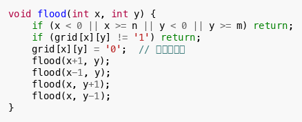

Flood Fill
Flood Fill 是一种特殊的 DFS/BFS，用于标记二维网格中的连通区域。
示例：统计岛屿数量

Flood Fill 是 CSP 第 2~3 题的经典模型，常见于迷宫、网格染色等问题。
推荐练习（洛谷）
题号
题目
难度
说明
P1596
Lake Counting S
入门+
基础 Flood Fill 统计水坑
P1451
求细胞数量
普及-
四连通 / 八连通计数
P1506
拯救oibh总部
普及-
反向 Flood Fill
P1162
填涂颜色
普及-
外围填充法
P1387
最大正方形
普及
结合 Flood Fill 预处理
P3958
奶酪
提高-
三维 Flood Fill